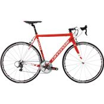

2015 Cannondale CAAD 10 Road Bike

Performance to the Power of X. The new CAAD10 is the world's most advanced aluminum road frame. At just 1150 grams for a 56 cm frame, the CAAD10 is lighter, stiffer and smoother than most of our competitors' elite carbon frames. 1)SUPERLIGHT CAAD10 FORK. Housed in our externally machined, tapered head tube, the 390 gram, 1-1/8" to 1-1/4" tapered carbon steerer fork features offset dropouts, allowing more fork angle for vertical compliance without affecting the razor-sharp handling. 2) SAVE REAR STAYS: Comfort meets acceleration. Rear stays are shaped and butted to allow them to flex vertically but stay extremely stiff laterally. Wide seat stay spacing at top tube junction also improves lateral stiffness. 3) OPTIMIZED TOP TUBE For maximum torsional rigidity, the massive, horizontally ovalized top tube measures a huge 47.5x42 mm where it meets the head tube, narrows through the middle for knee clearance, then widens again to meet the seat stays.